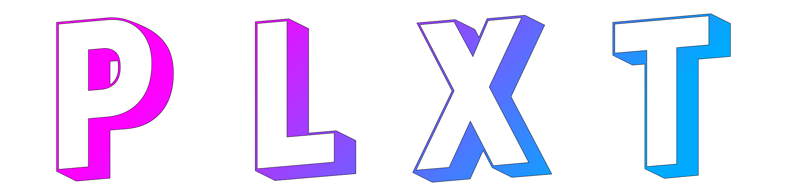

跳到输入框 · Skip to composer

未选择模型
默认助手
0%
中
新对话
有什么可以帮忙的？
配置好模型后即可开始。也可以从下面的示例提示词开始。
回到最新
附件
语音
截图
联网
工具
思考
生图
对比
模板
展开
更多
清空
停止
发送
就绪
AI 生成内容请自行核对 · 数据仅保存在本机浏览器
新对话
会话
参数
命令
Esc
↑↓ 选择 · Enter 执行 · Ctrl/⌘+K 打开
设置